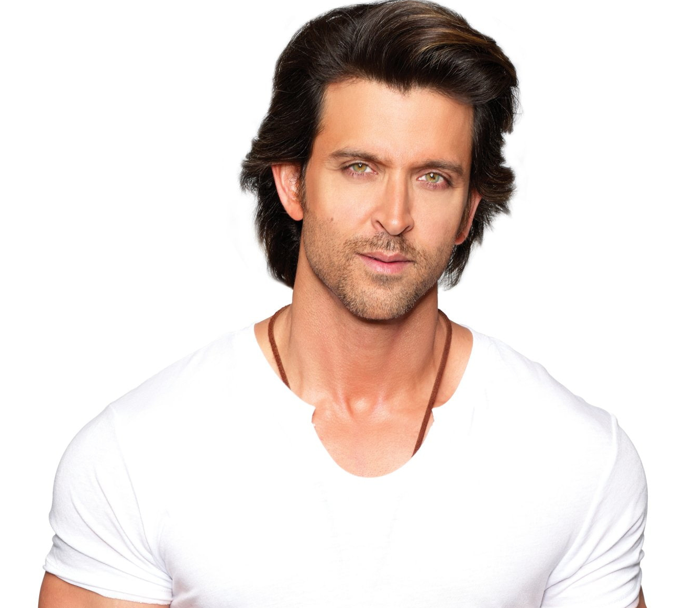
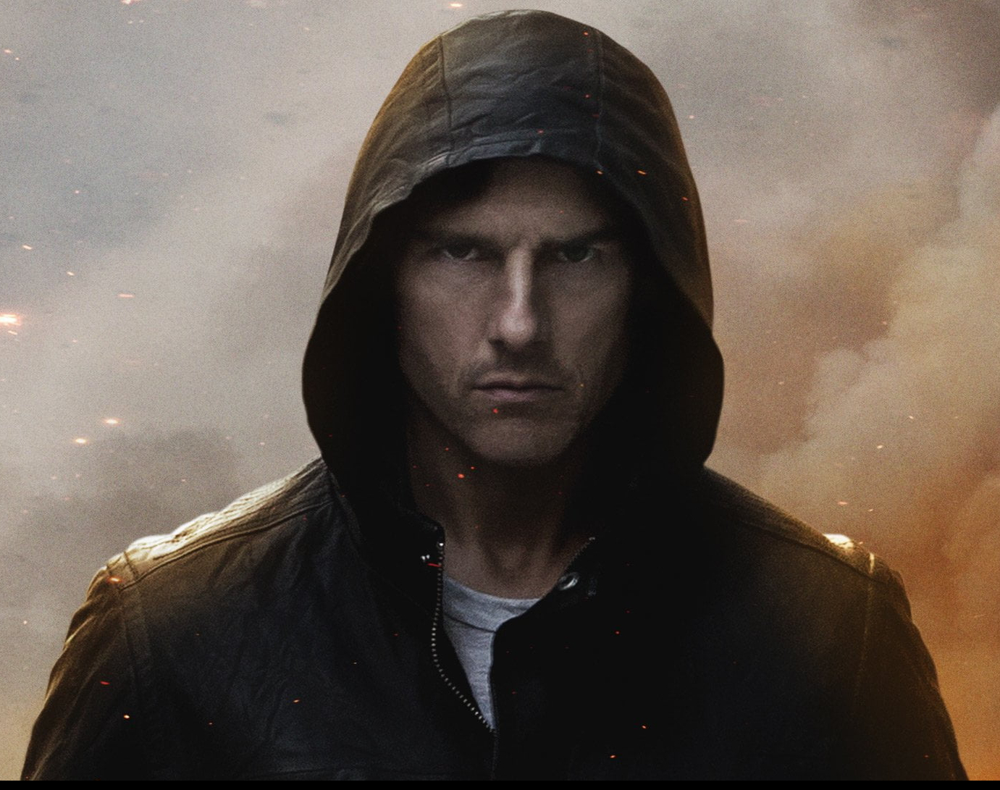
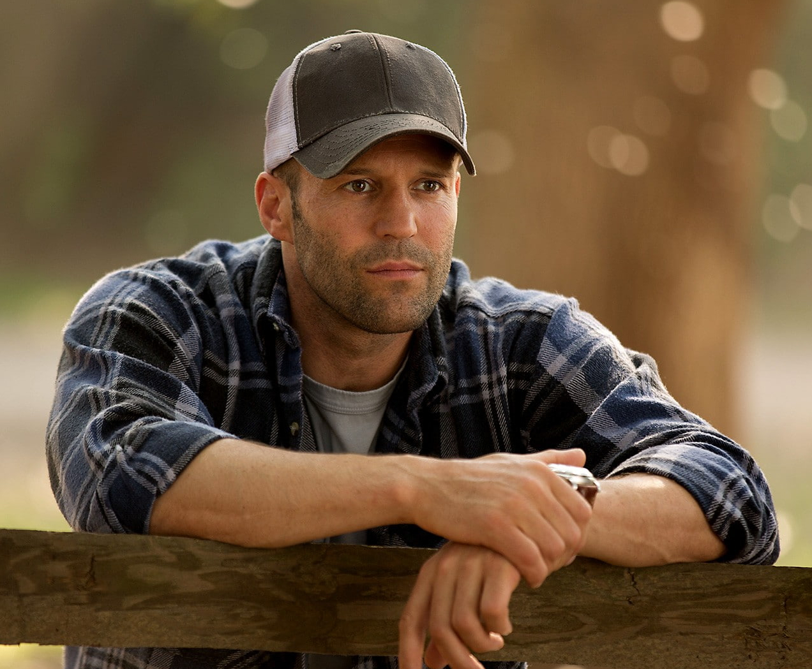

He started his in The 2003 science fiction film Koi... Mil Gaya, for which Roshan won two Filmfare Awards, was a turning point in his film career; he later starred as the titular superhero in its sequels: Krrish (2006) and Krrish 3 (2013).
He earned praise for his portrayal of a thief in Dhoom 2 (2006), Mughal emperor Akbar in Jodhaa Akbar (2008) and a quadriplegic in Guzaarish (2010). He achieved further commercial success by playing the lead in the 2011 drama Zindagi Na Milegi Dobara,
the 2012 revenge drama Agneepath, the 2014 action thriller Bang Bang!, the 2019 biopic Super 30, and the 2019 action thriller War; the lattermost ranks as his highest-grossing release
He won Filmfare Awards, Iffa awards and many more...

Tom Cruise Age= 60:
Cruise began acting in the early 1980s and made his breakthrough with leading roles in the comedy film Risky Business (1983) and action film Top Gun (1986).
Critical acclaim came with his roles in the dramas The Color of Money (1986), Rain Man (1988), and Born on the Fourth of July (1989). For his portrayal of Ron Kovic in the latter, he won a Golden Globe Award and received a nomination for the Academy Award for Best Actor.
As a leading Hollywood star in the 1990s, he starred in several commercially successful films, including the drama A Few Good Men (1992), the thriller The Firm (1993), the horror film Interview with the Vampire (1994), and the romance Jerry Maguire (1996). For the latter,
he won a Golden Globe Award for Best Actor and received his second Academy Award nomination. Cruise's performance as a motivational speaker in the drama Magnolia (1999) earned him another Golden Globe Award and a nomination for the Academy Award for Best Supporting Actor
He won: -Golden Globe Awards Academy Awars and may more...

Jason Statham Age= 55:
Statham began practising Chinese martial arts, kickboxing, and karate recreationally in his youth while working at local market stalls. An avid footballer and diver, he was a member of Britain's national diving team and competed for England in the 1990 Commonwealth Games. Shortly after,
he was asked to model for French Connection, Tommy Hilfiger, and Levi's in various advertising campaigns. His past history working at market stalls inspired his casting in the Guy Ritchie crime films Lock, Stock and Two Smoking Barrels (1998) and Snatch (2000).
He won many Athletik medals...

Scarlett Johansson Age= 37:
Scarlett Ingrid Johansson was born in November 22, 1984 is an American actress. The world's highest-paid actress in 2018 and 2019, she has featured multiple times on the Forbes Celebrity 100 list. Time magazine named her one of the 100 most influential people in the world in 2021.
Her films have grossed over $14.3 billion worldwide, making Johansson the highest-grossing box office star of all time. She has received various accolades, including a Tony Award and a British Academy Film Award, in addition to nominations for two Academy Awards and five Golden Globe Awards.